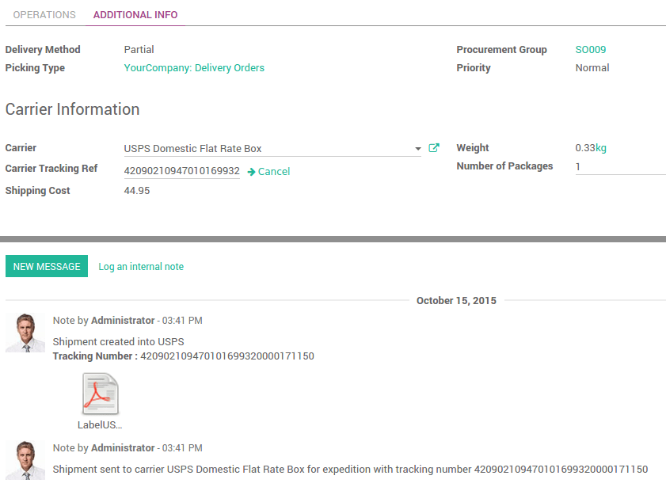

Overview
Odoo can handle various delivery methods, including third party shippers. Odoo will be linked with the transportation company tracking system.
It will allow you to manage the transport company, the real prices and the destination.
You can easily cancel the request made to the carrier system.
How to cancel a shipping request?
- If the delivery order is not Validated, then the request hasn't been made. You can choose to cancel the delivery or to change the carrier.
- If you have clicked on Validate, the request has been made and you should have received the tracking number and the label. You can still cancel the request. Simply click on the Cancel button next to the Carrier Tracking Ref:
You will now see that the shipment has been cancelled.

You can now change the carrier if you wish.
How to send a shipping request after cancelling one?
After cancelling the shipping request, you can change the carrier you want to use. Confirm it by clicking on the Send to shipper button. You will get a new tracking number and a new label.
